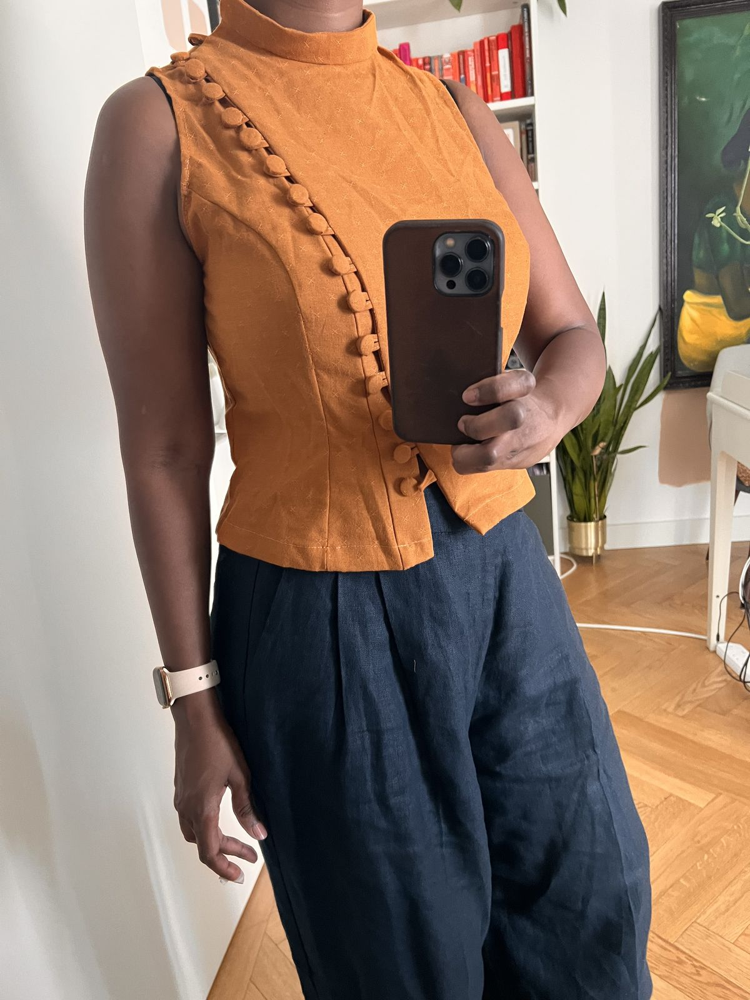
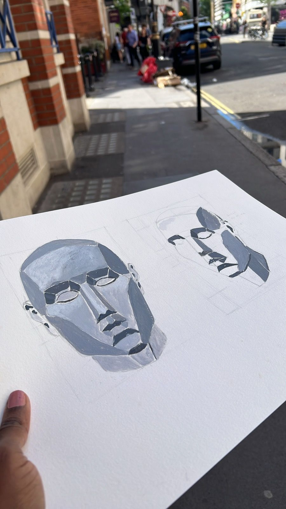

The June full moon or the Strawberry moon is apparently a good time to celebrate how far you've come. I am proud to have stuck with these Weeklies for the past 3 months. Like a temperamental old grandfather clock, it's not always been on time. But it's full of character and chimes somewhat regularly. So well done overall.
One of the questions at the beginning of this exploration was
More than any of my other writing (other than private journals of course), I've written what I've felt. Checked impulses to feel like I need to be more knowledgeable before writing about something. Shushed the voices that said 'Does anyone really need to hear this?'
I'm starting to hear what I sound like. And I like it.
Everything we make, holds a mirror up to us. By this I don't mean that the mirror reflects our ego or vanity. It might do. But that's not all it does.
What we make, tells us what we care about, what we're driven to learn and what lights us up from the inside
It shows us the truth about ourselves.
The more we make, the more we reveal of our true selves - like Rodin's chisel freeing a statue from a block of stone. How cool is that?
It feels core to my strategy practice - we ask questions, we make things, the making/experimenting teaches us where to point our compass next.
Deep thinking without making can feel theoretical or can give us a sense of false confidence. Because theory rarely survives real life uncertainty.
And Making without thinking can give us a sense of momentum and progress but can leave teams and organizations running around like headless chickens. Racking up a step count but not getting where they need to get to.
We need both - and as a bonus, making builds confidence in the teams that are constantly navigating uncertainty. Like driving in a fog, you can only see 2 feet ahead of you. But you can make the whole journey that way.
In Bird by Bird, Anne Lamott talks about the importance of shitty first drafts. How Maggie O'Farrell wrote 47 first drafts.
47 drafts? I can't seem to get from the first draft to the second. Or from a second to a third (and hopefully final). If its small fixes for clarity, that is a non issue. But when the overall structure isn't working and the narrative doesn't flow - it feels like hitting a brick wall. When I do get past the frustration and get to a next draft, it seems to be an entirely new thing.
Maybe unrecognizable next drafts are the point? Or maybe its just how my process works. A lot of writing advice is about the writing, not about the editing which is what I struggle with. When you write long form fiction or non fiction you can do the editing later - what matters is getting the story out but so far a lot of what I write are shorter articles so editing shows up fairly often in my process.
For now, here is my hypothesis about editing. Create some anchor questions to make sure the heart of what I'm trying to write about makes it to the next version. Closer to the truth. Whether it is fiction or non-fiction. Imagine a Ship of Theseus, constructed of words, how can it remain the same ship when all the words have been stripped away and replaced with new ones?
I've been thinking a lot about the Architect (someone who plots and plans in advance) <—→ Gardener (someone who finds the story through writing) spectrum of writers and writing. This applies beyond writing to all sorts of creative practices.
One of the art tutors I met recently, seems to be another 'Gardener' i.e. intutive maker.
Some things he said that stuck with me.


Next week is busy but I already have plenty written so its a matter of polishing and getting it out. I am trying to stick to my art and workout practice despite more travel and socializing.